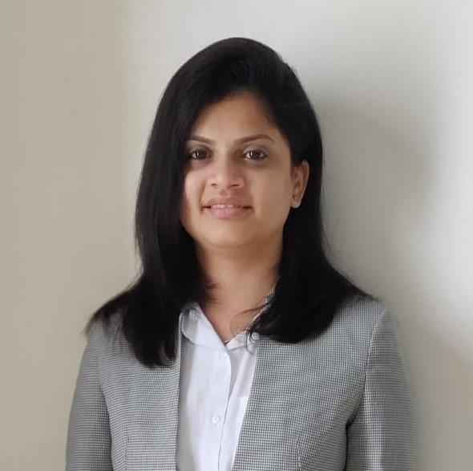

Aditi Khadloya

Contact Details -
Ph - 9823900xxxxx
Email - aditi.khadloya@gmail.com
Summary or objective statement
- Seeking for an opportunity, that utilizes my skills and education, which helps me in further professional
development while meeting the corporate objectives.
Education
- M.B.A. in Project Management in 2015.
- B.Sc. (Comp. Sci.) from Pune University (MH) in 2009.
Work experience
- Organization: [YYYYY] Company, Pune
Project #1: [YYYYY] - Oven8, HMI Application Development
Client: [YYYYY]
Role: Technical Lead
Responsibilities:
- Analyze the requirements of every specification.
- Design and develop the required feature using C++.
- Maintain user and configuration database for appliances.
- Report and resolve defects.
- Follow the coding standards and comply with the client’s expected requirements.
- Using client’s RTC platform as SCRUM dashboard and to track and report issues.
- Perform sanity testing over the integrated code before delivery.
-
Organization: [XXXXX] Pvt. Limited, Pune, India
Project#1: [XXXXX]
Client: [XXXXX]
Role: Senior Developer
Responsibilities:
- Analyzing interdependent data and feature specifications.
- Modeling behavior models using IBM Rational Rhapsody.
- Develop user interface for inputs and outputs in Rhapsody.
- Create automated testing scripts and tools using Java, VBA, and MS Access.
- Unit testing and System integration testing.
Skills
- Programming/Modelling/Scripting Languages - C, C++, Python, UML, Shell, Java, VBA
- Platform - Windows, Linux.
- Developing Tools - Eclipse, e2Studio, IBM Rational Rhapsody, Visual Studio, vi editor, Keil
- Database - SQLite, MySQL
- Debugging Tools - GDB, DDD(Linux), J-Link
- Version and Defect Management Tools - Git, SVN, VSS, RTC, JIRA
- Coding Standard - Misra C 2004
- Code Analysis Tools - QAC, valgrind, Klockwork
- Process Methodology - Agile SCRUM and Waterfall
Awards, certifications, or other achievements
- Quarterly Awards
- Pat on the Back Awards
- Java Sun certification
Hobbies